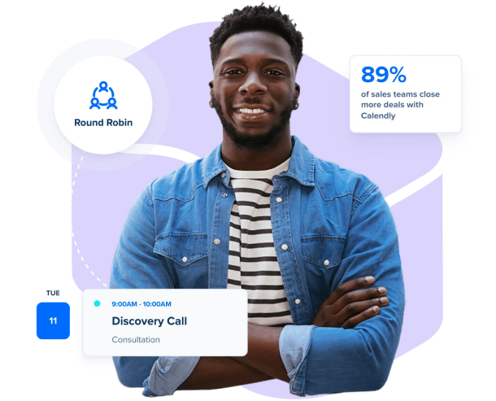
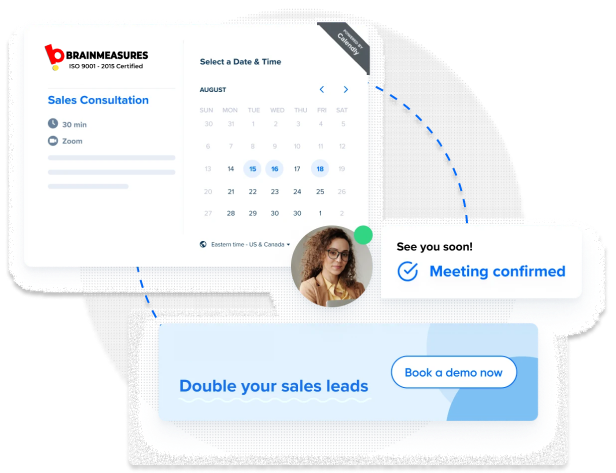
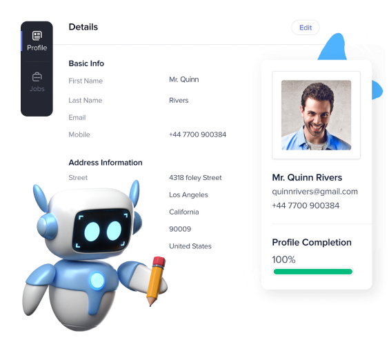
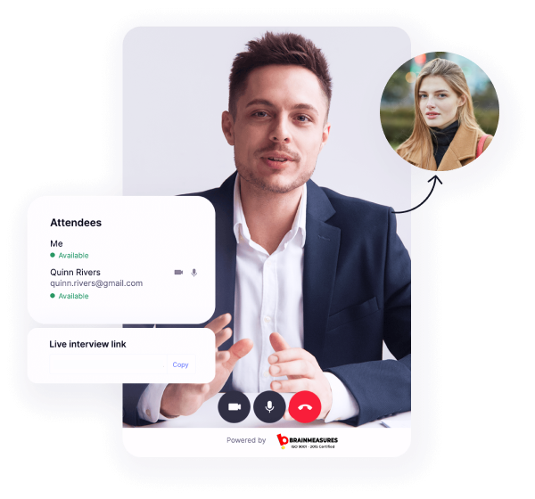
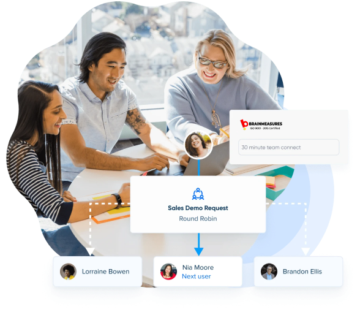
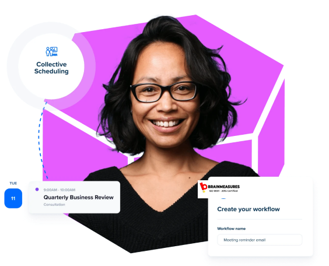

Mounting use of Artificial Intelligence (AI) and Chat-Bots in recruitment along with a stronger focus on diversity hiring would most likely be relevant trends for 2024 while recruiters are anticipated to shift their focus on critical recruiting aspects this year.
Experts @ Brainmeasures have identified Top Trends that they believe might transform the recruitment landscape in 2024.

Let’s Recruit Collaboratively
Team member’s involvement in the recruitment process can ensure quality potential joining the organization through their networks thus, adding tremendous value to the overall hiring. Recruiters are, therefore, focusing more on internal team referrals and devising lucrative employee referral programs. According to Brainmeasures research, nearly 81% of companies offer cash bonuses for successful hires through employee referral programs.
Moreover, referred hires are proven to be more productive, more engaged, and more consistent. Companies have, therefore, even started automating their employee referral initiatives through AI integrations in their recruitment mechanism.
In the present recruiting scenario, Analysts @ Brainmeasures recommend that companies should centralize their efforts more on collaborative hiring in 2024.
Internal cross-training or mobility initiatives are also gradually becoming popular with organizations as the tactic is proving to be handy for fixing the skill shortages and increasing production.
Recruitment Marketing Gaining Momentum
To appoint the best candidates for their organization, modern recruiters need to be creative and should embed recruitment marketing solutions into their hiring process. Just like conventional products marketing, Recruitment Marketing (or pre-employment phase of talent acquisition) is a unique approach to attract and foster quality talent to an organization, by marketing it to them. The objective is clearly to drive more applicants to apply for the current job positions.

Moreover, referred hires are proven to be more productive, more engaged, and more consistent. Companies have, therefore, even started automating their employee referral initiatives through AI integrations in their recruitment mechanism.
For 2024, Brainmeasures analysts recommend organizations should stick to recruitment marketing through social media or other options depending on their specific requirements.

Attracting Transferable Expertise from Alien Industry
Numerous industries are battling to find a skilled workforce while a massive chunk of baby boomers is getting retired. Recruiters have, therefore, started searching for human resources with varied skill-sets from different industries.
Brainmeasures specialists suggest, instead of looking for relevant previous experience, recruiters should preferably look out more for portable expertise and thus, considerably expand their potential talent pool.
Artificial Intelligence (AI)
AI integration in the recruitment process is growing and is anticipated to propel further for its advanced capabilities, including automated candidate sourcing, remote hiring, retaining, improving employee engagements, and more.
Brainmeasures analysts strongly recommend AI to be a must-have capability for recruiters in 2024 to ensure quality caliber getting hired for their organization.
To know more about AI read our blog Artificial Intelligence (AI) in Online Skill-Testing and Talent Search
Diversity Recruitment
Diversity Hiring – in the broadest sense includes the multiplicity in gender, tradition, geography, and age – is considered to be one of the most relevant themes for recruiters this year.
Diversity hiring and inclusion initiatives ensure various advantages, including the enhanced employee experience, increased productivity, and improved retention along with an encouraging recognition for the employer’s brand.
Experts @ Brainmeasures believe to see more companies ramping up their diversity hiring initiatives in 2024, leveraging the digital marketplace that effortlessly connects diverse workforce with employers.
Flexible Workforce
Presently, most of the Global Enterprises are operating with a blended workforce arrangement that includes full-timers, contractual workers, freelancers, and various others. According to Brainmeasures research, nearly 42% of workers (around 63 million individuals), in the U.S. alone, come under the Gig Economy (short-term contracts or freelance work), and the count is likely to ascend even further in 2024.
Brainmeasures analysts reveal that nearly 81% of independent workers enjoy the fact that they can work from anywhere and at any time. Also, individuals operate under the Gig Economy are often consider themselves more satisfied than traditional employees.
Ongoing technology advancements, including smart-phones, fast internet, and others are also propelling the flexible workforce landscape. Recruiters can also take advantage of numerous freelance platforms, like UpWork, FIVERR, and PeoplePerHour match freelancers’ skills with projects. Recruiters can turn to independent workers to meet their needs, especially, when there is urgent workforce requirement for their organization.
Moreover, if there is a mutual sync, companies may hire decently performing freelancers as their full-time resource.
Generation-Z is Trending
Generation-Z (Gen-Z) began to evolve, between the mid-90s and the mid-2000s, post the Millennials. These Digital Natives started entering the global workforce, although primarily for internship and entry-level positions, however, gradually is now making its mark into the mainstream workplace as well.
Brainmeasures analysts suggest, recruiters should pace-up their knowledge about this new digital being, as Gen-Z hiring is undoubtedly to accelerate in 2024.
According to the Brainmeasures experts, here are some key-elements that recruiters should consider while hiring Gen-Z:
- Make sure to have a plan for their growth
- Do discuss about health and wellness
- Take care of their short-attention span
- Should know their digital niche:
- Smart-phone is a must for themo
- They prefer video
Hiring managers must make sure to remember these points while formulating recruitment strategies to be a successful recruiter this year.
To understand more about Generation Z, read our Next Report – “Secrets to Hiring and Engaging Gen-Z”

Future-Proof Hiring
Modern recruiters are growingly focusing on hiring individuals with future-proof skills that include smart problem-solving capabilities, intelligent thinking, seamless flexibility, and others. Additionally, recruiters are considering more about candidate’s soft-skills as employers often seem battling to find talent with excellent soft skills, including communication, listening, empathy, attitude, and more.
Global industries are transforming with ongoing alterations in technology landscape, which expected to generate more demand for candidates with transferable expertise, future-proof capabilities, and soft skills in 2024.
Transitioning Hiring Concepts
In this disruptive technology environment, recruiters need to modify their conventional hiring concepts to ensure they seamlessly appoint quality talent for their organization. Ideally, recruiters should transition their recruitment mechanism, from traditional job description based recruitment to a project based hiring.
Brainmeasures advisers suggest that hiring managers should include Gig Economy in their recruitment itinerary while switch to hiring candidates considering their transferable expertise and soft-skills. As per Brainmeasures experts, both of these tactics are likely to transform the organizations’ approach to manage and operate their projects in 2024.


Inference
2024 is anticipated to reshape the entire recruitment space, and therefore, it is more sensible for hiring managers to be more creative and innovative with their recruiting styles.
These recruiting trends for 2024 by Brainmeasures Research provide a reasonable overview of those developments in the recruitment landscape that hiring teams might want to keep a vigil during the next 12 months.